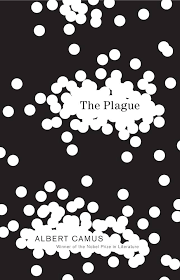

This book is about an epidemic that hit the town of Oran. This chronicle details certain key phases, such as lots of rats dying, the first human
death, multiple human deaths, when it is declared as an epidemic, the waning of the epidemic, and the end of the epidemic. This book is written
from the perspective of a narrator that tries to remain unbiased town throughout the different phases. Albert Camus had never lived through an epidemic
or pandemic, so he used books and other reference materials on previous epidemic and widespread diseases to write this book.

| Character Name |
Description |
| Dr. Bernard Rieux |
The doctor in the town of Oran. He is also the narrator that tries to remain unbiased throughout the book.
His wife is in a sanitorium outside of town,
|
| Father Penaloux |
The priest in Oran. He gives two sermons in the book, once in the beginning and the other in the middle to the end of the
epidemic. |
| Jean Tarrou |
He is an outsider that went on vacation in Oran and was forced to stay when the plague started.
He wrote everything down in a journal, which Rieux uses to give an unbiased detail of the events of
the epidemic. |
| Cottard |
He committed a crime in the past and was not caught, so he is very vigilant, suspicious, and paranoid about
being caught for that crime. During the plague, he becomes happier because he does not fear being caught
and gets involved in smuggling. |
| Raymond Rambert |
A journalist that came to Oran to study the sanitary conditions. He gets caught in the lockdown of Oran and
tries to get himself out to get back to his wife. At first, he distances himself from everyone else in Oran;
however, at the end he sees himself as part of Oran.
|
| Joseph Grand |
A civil servant in the same position for decades because he was going to be promoted but did not persue it.
His wife left him because she was tired of their routine and marriage. He tries to write a book, but he gets
stuck on the opening sentence because he wants it to be perfect.
|